Introducción
Aquí encontrarás una guía paso a paso sobre las funciones de FlashPass Studio.
Para navegar entre las distintas secciones, podés usar el menú que verás a la izquierda.
¿Querés probar el sistema ahora? Saltá a Crear tu productora o Crear tu primer evento.
¿Qué es FlashPass Studio?
FlashPass Studio es la plataforma completa para productores de eventos en Argentina y Uruguay. Creá, vendé, gestioná y analizá tus eventos desde un solo lugar.
¿Qué podés hacer con FlashPass?
- 🎟️ Vender entradas online: Publicá tu evento en la app FlashPass para que tus clientes compren en un clic.
- 📊 Analytics en tiempo real: Métricas de facturación, tickets vendidos, visitas y conversión.
- 👥 Gestionar tu equipo: RRPP, vendedores, supervisores y validadores con roles diferenciados.
- 💎 CRM de clientes: Ranking de tus mejores clientes con historial completo de compras.
- 📧 Email Marketing: Grupos de audiencia por eventos/tickets y campañas personalizadas.
- 🍹 FlashPOS: Punto de venta para consumiciones dentro del evento.
- ⚡ FlashPay: Billetera digital para eliminar filas en la barra.

Crear tu productora
Configurá tu productora una sola vez. Es el primer paso antes de publicar eventos. El proceso tiene 5 pasos guiados que podés completar en menos de 5 minutos.
Paso 1 — Accedé o creá tu cuenta
Entrá a studio.flashpass.com.ar con tu cuenta de Google, Apple o email. Si es la primera vez, hacé clic en Registrate gratis.

Paso 2 — Elegí "Creá tu marca"
Al ingresar por primera vez, verás la pantalla de bienvenida. Seleccioná Creá tu marca para registrarte como productor y comenzar a crear tu productora.

Paso 3 — Perfil (Información pública)
Al elegir "Creá tu marca" accedés directamente al formulario. Completá el Nombre de fantasía de tu marca — este es el nombre que verán tus compradores. Podés agregar descripción, email de contacto, WhatsApp, Instagram y Facebook.

Paso 4 — Cuenta (Datos fiscales)
Ingresá la Razón Social, CUIT, email administrativo y teléfono. Prestá atención: el CUIT solo puede modificarse contactando a soporte.

Paso 5 — Banco (Opcional)
Agregá tu CBU para recibir pagos automáticos semanales sin comisiones. También podés saltear este paso y configurarlo después desde Configuración.

¡Listo! Tu productora creada
Al completar el registro, vas a Mis Productoras donde verás tu productora creada y seleccionada. Desde acá podés crear más productoras con el botón + Nueva Productora, cambiar entre ellas, acceder a Configuración, ver el perfil público o archivar las que ya no uses.

Crear tu primer evento
Una vez creada tu productora, andá a Eventos y seguí estos pasos en orden. El flujo incluye crear tus tickets antes de publicar.
Paso 1 — Ir a Eventos
Andá a Eventos en el menú y hacé clic en + Crear Evento. Si no tenés eventos, verás el mensaje para crear uno nuevo.

Paso 2 — Información
Completá el nombre del evento, descripción, fecha y hora. Subí la imagen principal (720×1280px) y el banner (390×150px). Opcional: Meta Pixel y cortesías individuales.

Paso 3 — Ubicación
Elegí un establecimiento existente o creá uno nuevo. La ubicación permite que los asistentes encuentren el evento. Podés subir una planimetría opcional.

Paso 4 — Crear tickets (dentro del evento)
En la pestaña Tickets, si no tenés ninguno, hacé clic en + Crear primer ticket. Los tickets son obligatorios para poder publicar.

Paso 5 — Formulario del ticket
Completá nombre, precio, cupo, canal de venta (Online/Presencial), fechas de venta y opciones como activación condicional o género. Guardá con Crear Ticket.

Paso 6 — Ticket creado
Una vez creado, el ticket aparece en la lista. Podés editar, duplicar o marcar como agotado. Creá más categorías con + Crear categoría o pasá a publicar.

Paso 7 — Publicar
En la pestaña Publicar definí la visibilidad (Público o Privado), activá FlashTrade para reventa si querés, aceptá los términos y hacé clic en Publicar Evento.

Paso 8 — ¡Evento publicado!
El evento entra en revisión (menos de 24hs). Una vez aprobado, aparece en la app y podés compartir el link. Verás la notificación de éxito.

Eventos
Desde acá creás, configurás y publicás todos tus eventos. El flujo está diseñado para ser rápido: 4 pasos simples y ya estás vendiendo.
- Nombre, descripción con editor de texto enriquecido, fecha y hora
- Imagen principal (720×1280px) y banner (390×150px)
- Selector de establecimiento vinculado
- Hasta 5 píxeles de Meta para tracking de conversiones
- Visibilidad Pública o Privada (con link directo)
- Activación de FlashTrade para reventa controlada
- Estado en tiempo real: Borrador → En revisión → Activo → Terminado
Tickets, Combos y Descuentos
El sistema de tickets más flexible del mercado. Configurá cada detalle para maximizar tus ingresos.
- Tickets individuales con precio, cupo y límite por compra
- Combos que agrupan múltiples tickets (packs, VIP+consumición)
- Códigos de descuento para preventa exclusiva o RRPP
- Canal de venta: Online (app) o Presencial (FlashPOS en puerta)
- Segmentación por género (Masculino / Femenino / Todos)
- Activación condicional automática entre tandas
- Duplicar tickets para crear tandas en segundos
Analytics
Tomá decisiones con datos. El panel de analytics te da visibilidad completa sobre el rendimiento de tu evento.
- Facturación total en ARS del período seleccionado
- Tickets vendidos y monto total acumulado
- Visitas a las páginas de tus eventos
- Filtros por período y por evento específico

Reporte de Ventas
Toda la información de ventas de un evento en un solo lugar. Exportable en CSV para tu propio análisis.
- Resumen: facturación total, tickets vendidos, tasa de ocupación
- Desglose por tipo de entrada y canal de venta
- Ventas por colaborador: qué vendió cada RRPP o vendedor
- Exportación a CSV con un clic
Colaboradores
Asigná roles específicos a cada integrante de tu equipo. Cada persona ve y puede hacer exactamente lo que necesita.
- Roles a nivel Productora: Administrador y Analista (solo lectura)
- Roles por Evento: Admin, Artista, Supervisor, Validador, Vendedor
- Equipos de Venta reutilizables entre eventos
- Invitación por email — el rol se asigna cuando el usuario se registra
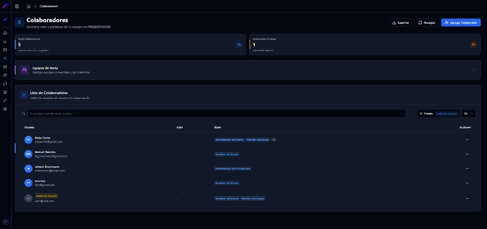
Agregar colaboradores
Asigná un rol directamente a cada integrante usando su email. Si el usuario no tiene cuenta en FlashPass, recibirá el rol cuando se registre.
Paso 1 — Abrí el formulario
Desde la sección Colaboradores, hacé clic en el botón + Agregar Colaborador. Se abrirá un modal con el formulario.
Paso 2 — Información básica
Completá los datos del colaborador:
- Email del colaborador: La dirección de correo con la que se registra o se registrará en FlashPass. Si no tiene cuenta, recibirá el rol cuando se registre.
- Alias (opcional): Un nombre visible para identificar al colaborador. Si no lo especificás, se mostrará el @username del colaborador.
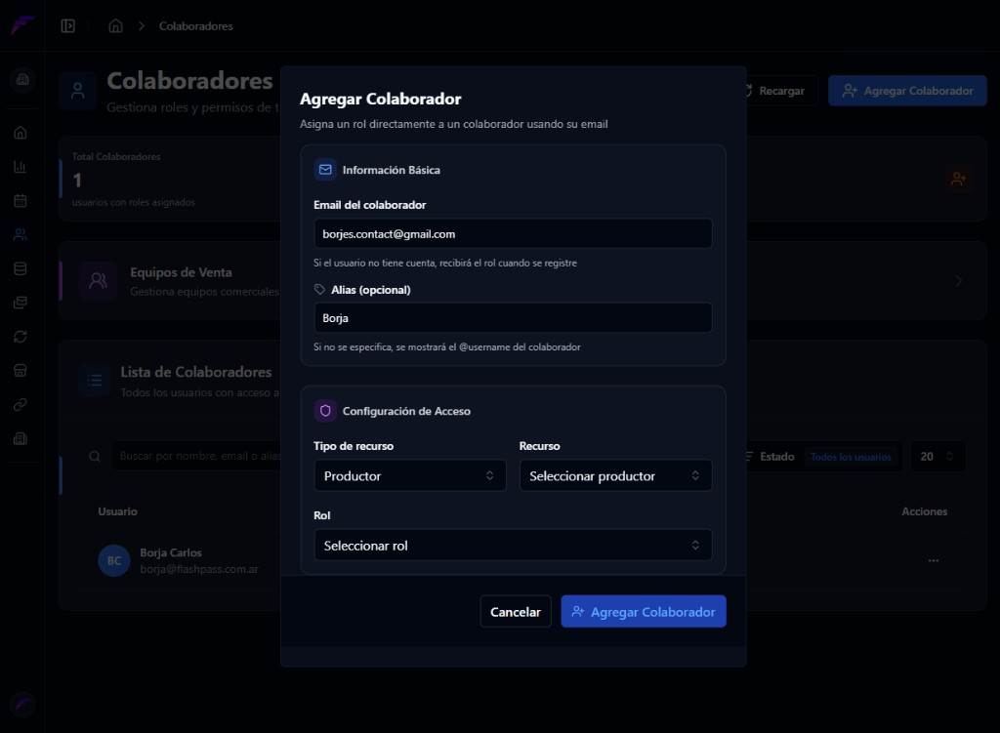
Paso 3 — Configuración de acceso
Definí el tipo de recurso y el rol que tendrá el colaborador:
- Tipo de recurso: Elegí entre Productor (a nivel de productora) o Evento (para un evento específico).
- Recurso: Seleccioná la productora o el evento al que aplica el acceso.
- Rol: Elegí el rol según el tipo de recurso seleccionado.
Roles a nivel Productora
Cuando el tipo de recurso es Productor, podés asignar:
- Administrador de la Productora: Acceso administrativo para gestionar los recursos de la productora.
- Analista de la Productora: Acceso de solo lectura a datos financieros y de marketing.
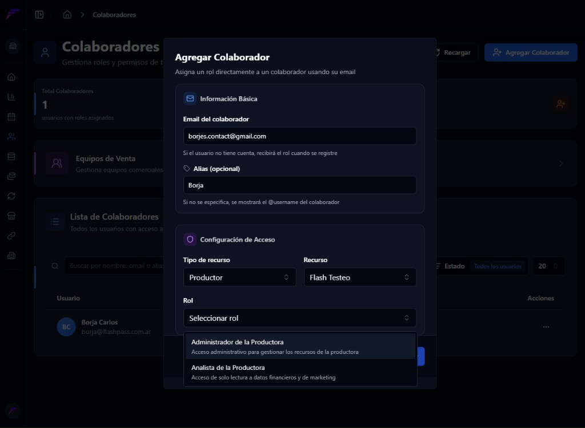
Roles a nivel Evento
Cuando el tipo de recurso es Evento, podés asignar:
- Administrador del Evento: Configurar ventas, promociones, cortesías y personal para un evento.
- Artista: Artista asociado al evento.
- Supervisor del Evento: Monitorear KPIs en vivo y supervisar las operaciones del evento.
- Validador de Entradas: Escanear y validar credenciales de acceso en puerta.
- Vendedor del Evento: Vender entradas para un evento.
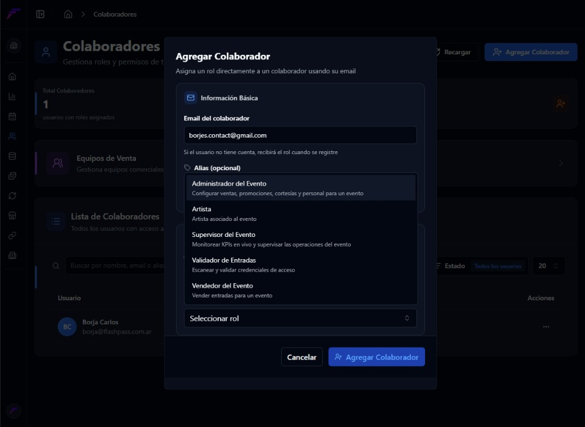
Paso 4 — Confirmar
Hacé clic en Agregar Colaborador. Verás un mensaje de confirmación y el nuevo colaborador aparecerá en la lista con su rol asignado.
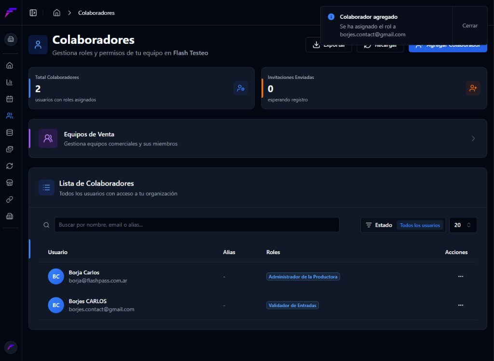
Equipos de Venta
Los equipos de venta te permiten agrupar vendedores y reutilizarlos en múltiples eventos. Creá un equipo, agregá miembros y asignalo a los eventos que necesites.
Paso 1 — Accedé a Equipos de Venta
Desde el menú lateral, entrá a Colaboradores y luego a Equipos. Verás la lista de equipos existentes y el botón + Crear Equipo.
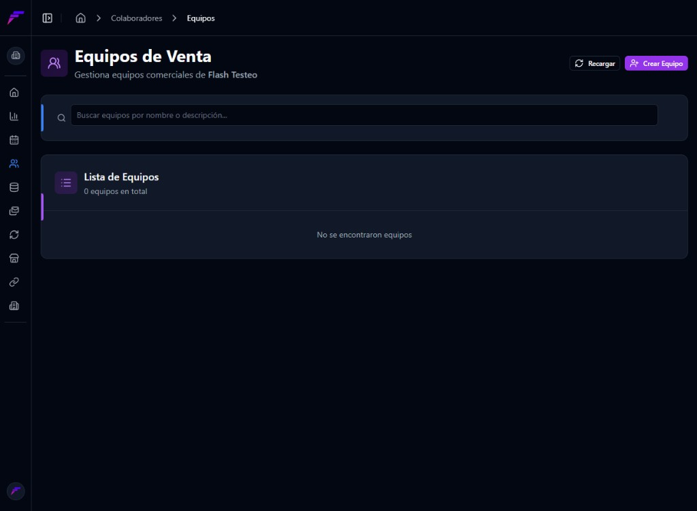
Paso 2 — Crear el equipo
Hacé clic en + Crear Equipo. En el modal completá:
- Nombre del equipo *: Un nombre identificatorio (ej: "Vendedores Evento Viernes").
- Descripción: Opcional. Describe el propósito del equipo para que tu equipo lo identifique fácilmente.
Hacé clic en Crear Equipo para confirmar.
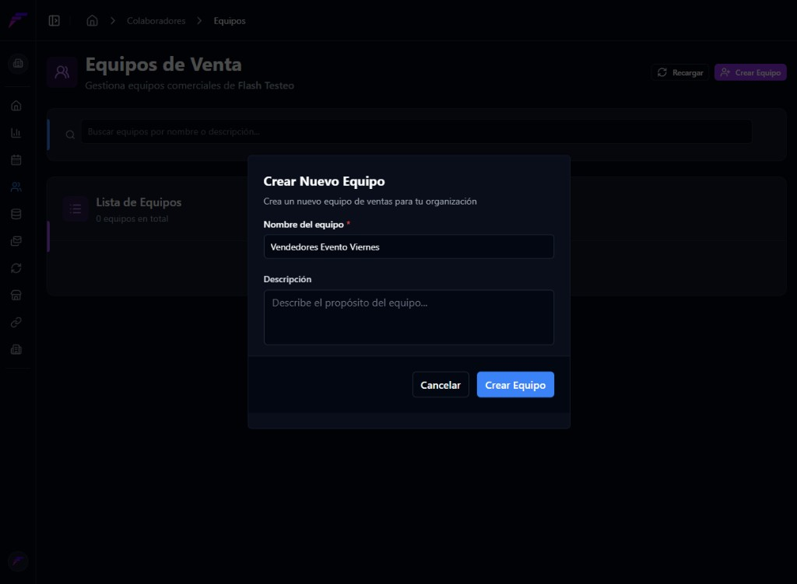
Paso 3 — Gestionar miembros
Una vez creado el equipo, aparecerá en la lista con sus estadísticas (miembros y eventos). Hacé clic en el menú de acciones (⋯) y elegí Gestionar miembros.
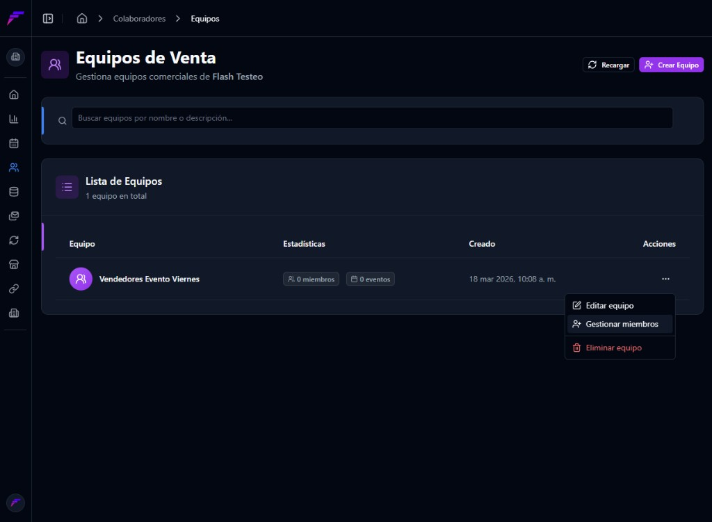
Paso 4 — Agregar miembros al equipo
En la pantalla del equipo, dentro de la pestaña Miembros, hacé clic en + Agregar Miembros. Tenés dos opciones:
- Agregar manualmente: Ingresá alias y email de cada miembro uno por uno. Podés usar + Agregar otro miembro para sumar más.
- Importar Excel: Subí un archivo Excel con alias y emails para cargar varios miembros a la vez.
Completá los datos y hacé clic en Agregar Miembro.
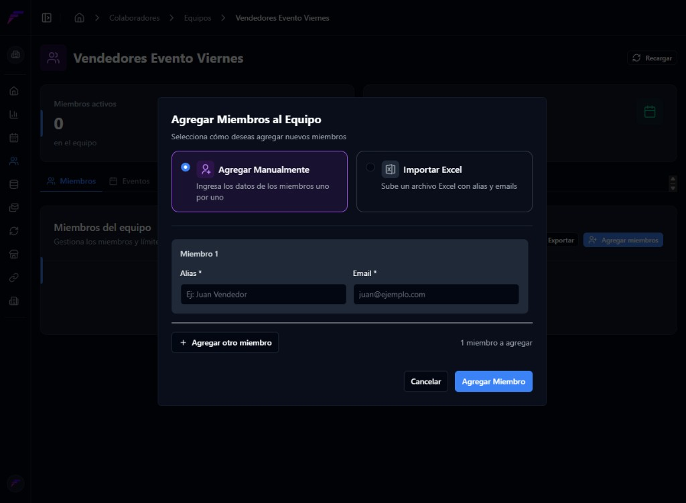
Paso 5 — Asignar el equipo a un evento
En la pestaña Eventos del equipo, hacé clic en + Asignar a evento. En el modal:
- Evento: Seleccioná el evento al que querés asignar el equipo.
- Límite de Cortesías: Cantidad máxima de cortesías que el equipo puede otorgar en total (ej: 500).
- Límite de Efectivo: Monto máximo en efectivo que el equipo puede manejar (ej: 250.000).
Hacé clic en Asignar Equipo para confirmar.
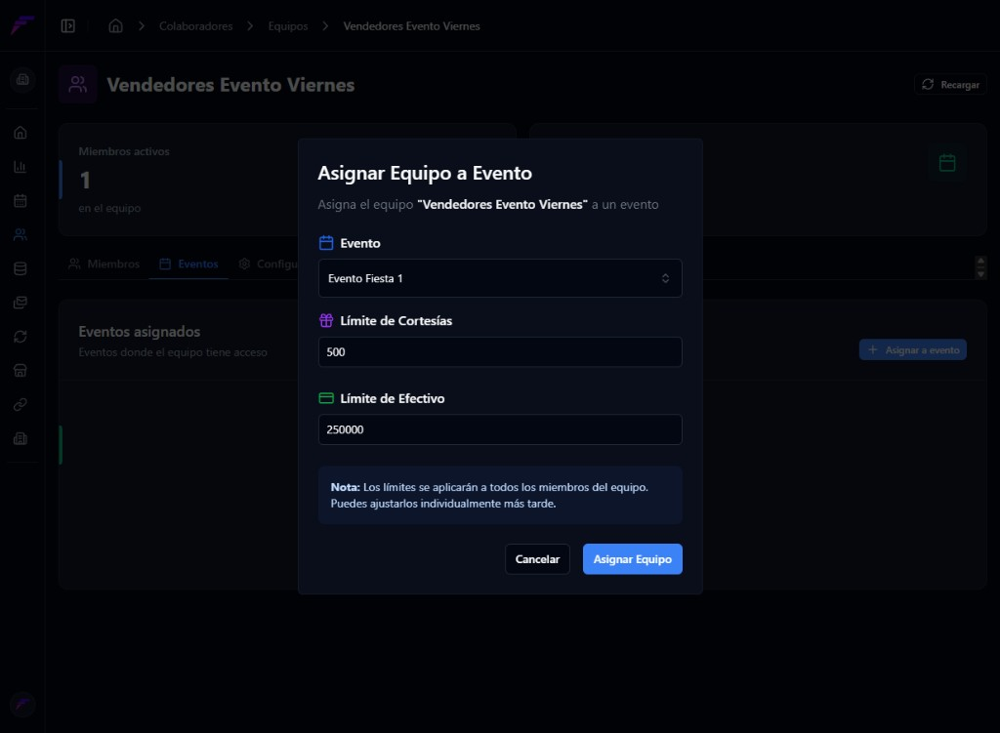
Roles
Desde el RRPP que vende en Instagram hasta el validador en puerta — todos tienen su acceso exacto.
- 👑 Administrador de Productora: Acceso completo.
- 📈 Analista de Productora: Solo lectura.
- 🎪 Administrador del Evento: Configura ventas y promociones.
- 🔭 Supervisor del Evento: KPIs en vivo, operaciones.
- 🔍 Validador de Entradas: Escanea credenciales en puerta.
- 💼 Vendedor del Evento: Vende para eventos específicos.
CRM - Gestión de Clientes
Analizá y gestioná la información de tus clientes en el período que selecciones. El CRM te permite identificar quiénes son tus clientes más valiosos y planificar campañas de marketing.
Ranking de Clientes
En la pestaña Ranking analizás el comportamiento de tus clientes en el período seleccionado. La columna Facturación muestra el monto total sin cortesías.
- Facturación: Monto total gastado por el cliente en el período
- Órdenes: Cantidad de pedidos realizados
- Promedio por Evento: Gasto promedio en cada evento
- Eventos: Cantidad de eventos en los que compró
Podés ordenar por facturación (ascendente o descendente), buscar por nombre o email, exportar todo a Excel y personalizar las columnas visibles.
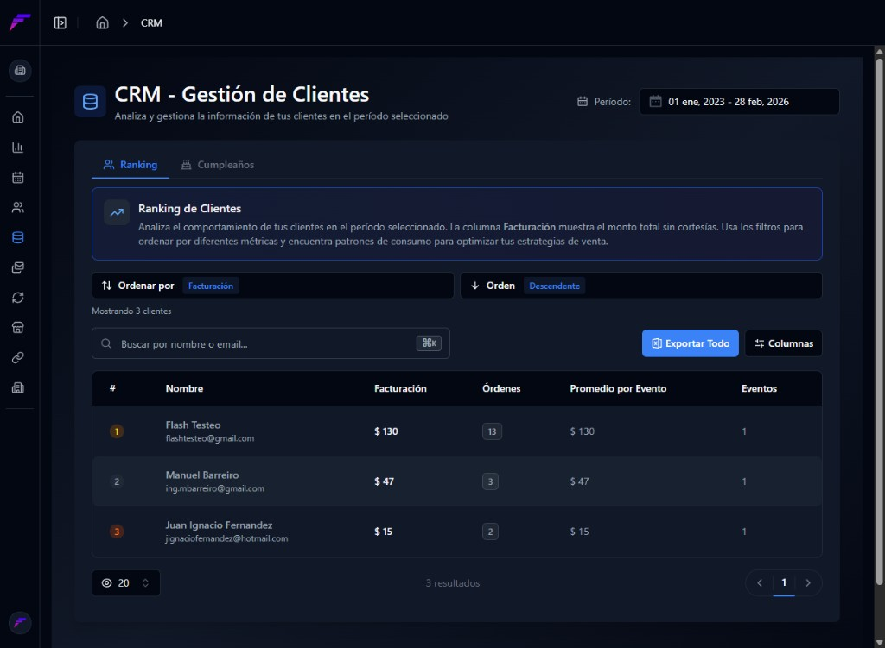
Cumpleaños
La pestaña Cumpleaños te permite gestionar y celebrar los cumpleaños de tus clientes. La columna Actividad muestra la facturación en el período seleccionado para clientes activos, o el total histórico para clientes inactivos. Usá los filtros para planificar campañas con anticipación.
- Hoy / Esta Semana / Este Mes: Resumen de cumpleaños en cada período
- Próximo Cumpleaños: Fecha, días restantes y edad del cliente
- Actividad: Facturación y cantidad de pedidos
- Última Compra: Fecha y antigüedad
Ordená por días hasta cumpleaños, filtrá por período (todo el año o rangos específicos) y exportá la lista para tus campañas.
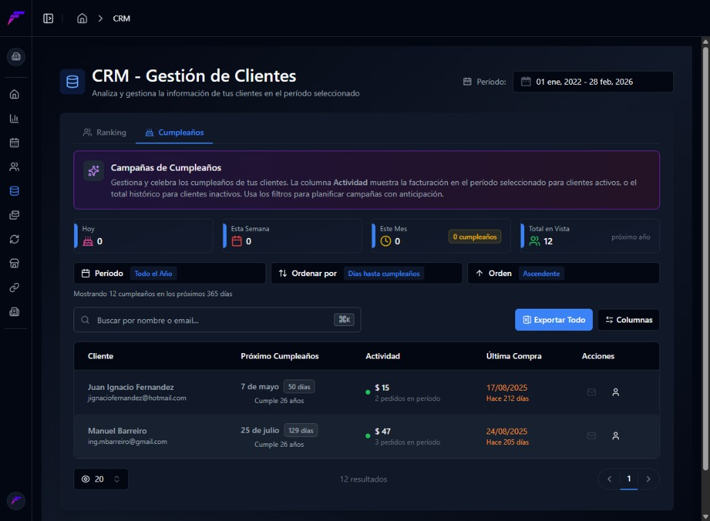
Email Marketing
Gestioná tus grupos de audiencia y campañas de email. Segmentá compradores por eventos y tickets, creá campañas personalizadas y hacé seguimiento del uso mensual.
Grupos de Audiencia
Creá grupos basados en compradores de eventos y tickets específicos. Cada grupo muestra la cantidad de miembros, su estado (Activo) y fecha de creación. Podés ver, editar o eliminar grupos desde el menú de acciones.
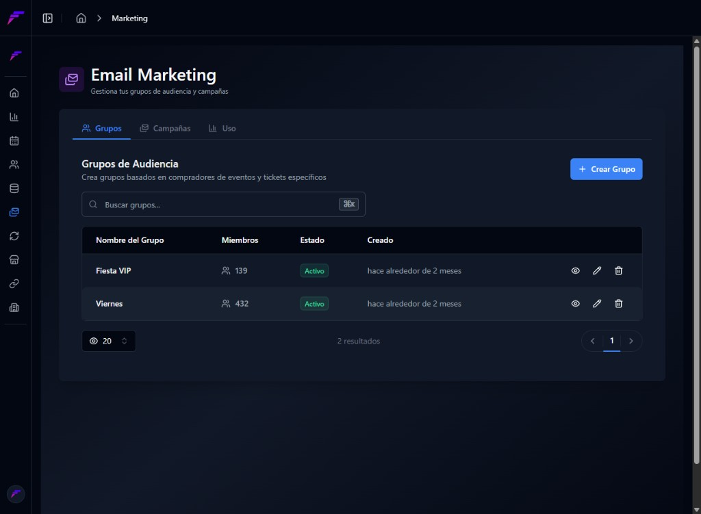
Crear un grupo (paso a paso)
Hacé clic en + Crear Grupo. El proceso tiene 3 pasos:
Paso 1 — Eventos: Seleccioná los eventos cuyos compradores formarán parte del grupo. Buscá eventos por nombre y marcá los que quieras incluir.
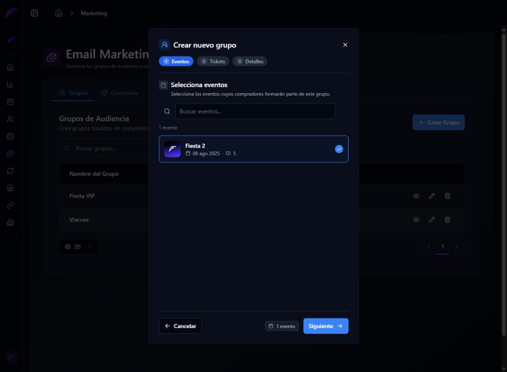
Paso 2 — Tickets: Elegí qué tickets de cada evento incluir en el grupo. Podés seleccionar o deseleccionar todos los tickets de un evento. Cada ticket muestra la cantidad de emails asociados.
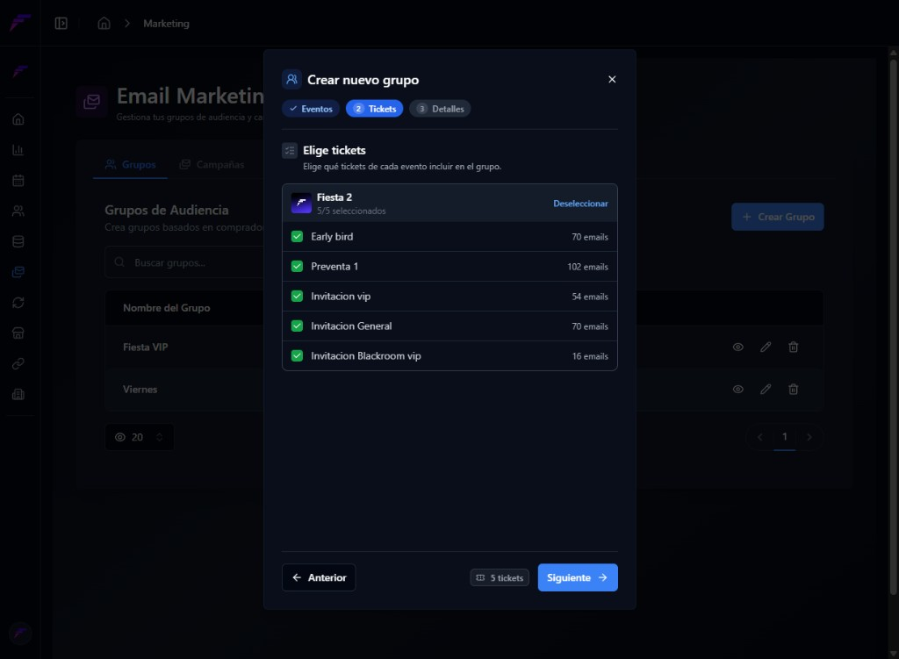
Paso 3 — Detalles: Completá el nombre del grupo (obligatorio) y una descripción opcional. El resumen muestra cuántos eventos, tickets y miembros tendrá el grupo. Hacé clic en Crear Grupo para finalizar.
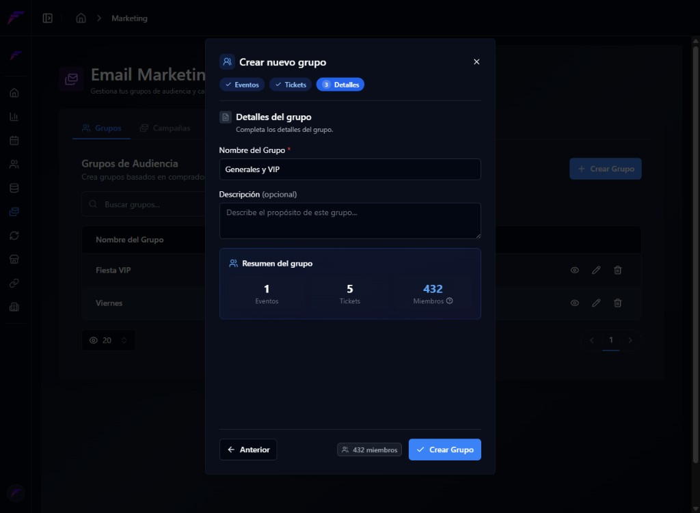
Campañas de Email
Creá y gestioná tus campañas de email marketing. Desde la pestaña Campañas verás el listado con nombre, descripción, estado (Borrador, Enviada, etc.), destinatarios, métricas y fecha de creación. Podés editar, duplicar o eliminar campañas.
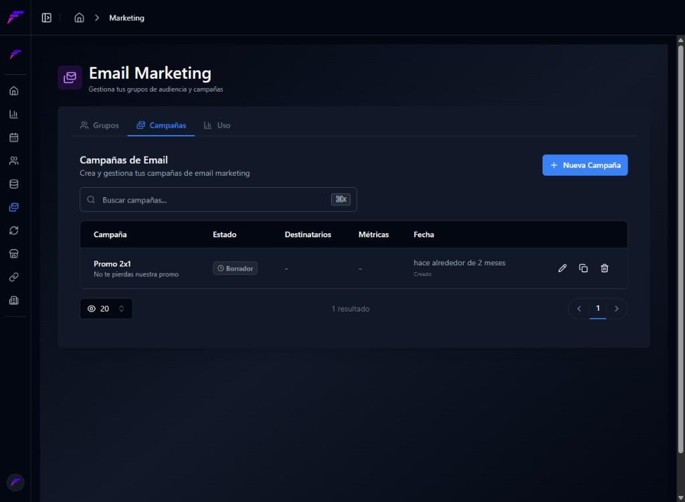
Crear una campaña
Hacé clic en + Nueva Campaña. Completá:
- Nombre de la Campaña *: Nombre interno para identificar la campaña
- Nombre del Remitente: El nombre que verán los destinatarios en su bandeja
- Asunto del Email *: El asunto que verán los destinatarios
- Grupo de Audiencia: Seleccioná el grupo al que quieras enviar (opcional)
Podés editar el contenido después de crearla.
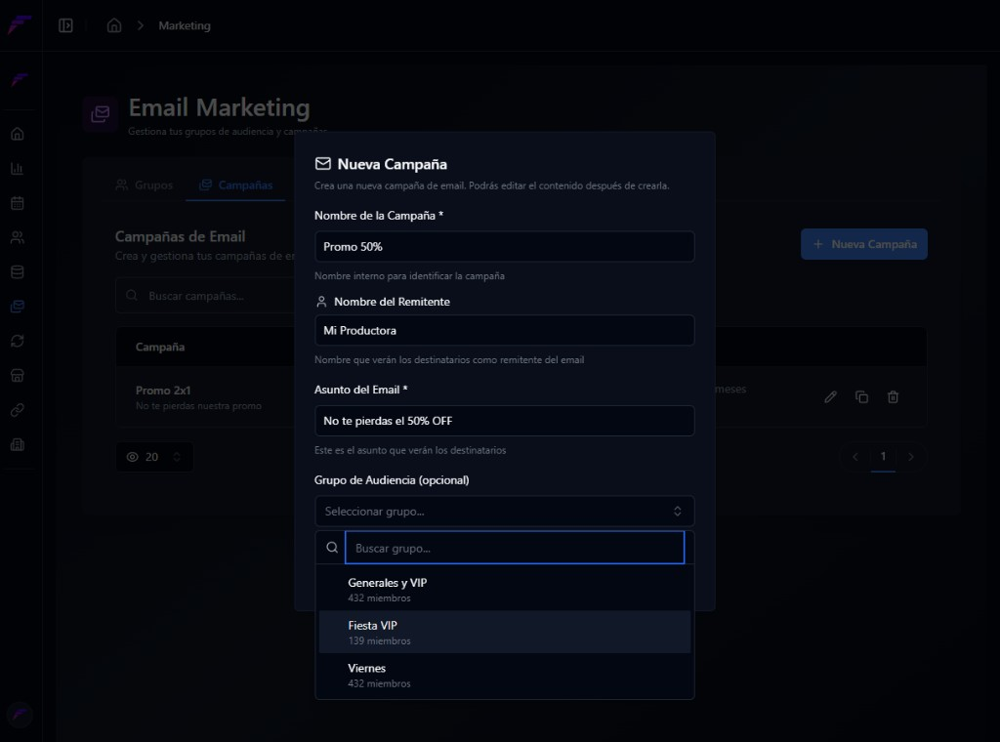
Editar contenido del email
Cuando edites una campaña, accedés al editor con dos columnas:
- Contenido: Título, cuerpo del email e imagen del header (JPG, JPEG, PNG hasta 3MB)
- Vista Previa: Vista previa en tiempo real de cómo se verá el email en móvil
Podés guardar, descartar o enviar la campaña. Recordá guardar antes de salir si tenés cambios pendientes.
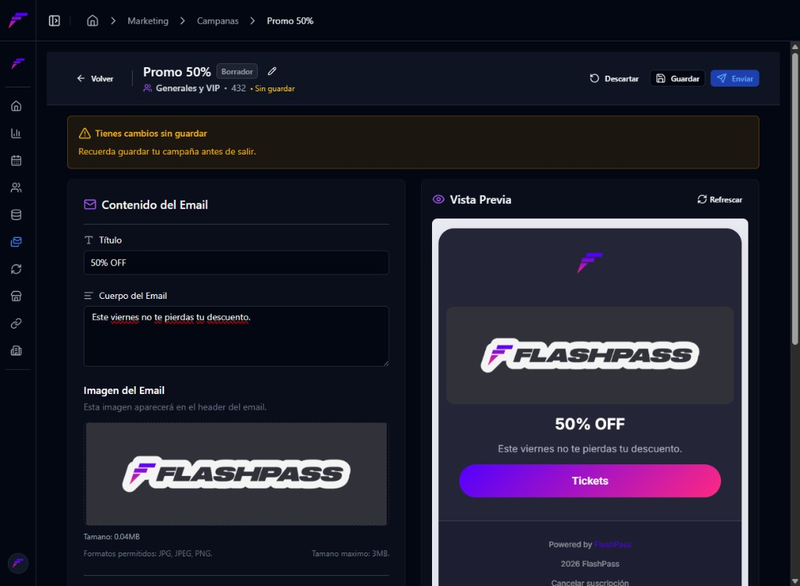
Uso
En la pestaña Uso consultás el consumo mensual de emails enviados. Verás el límite total (ej: 50.000), cuántos enviaste, cuántos restan, cuándo se reinicia el contador y los días restantes del mes.
Si necesitás más capacidad, podés contactar a info@flashpass.com.ar o con tu ejecutivo de cuenta para planes personalizados.
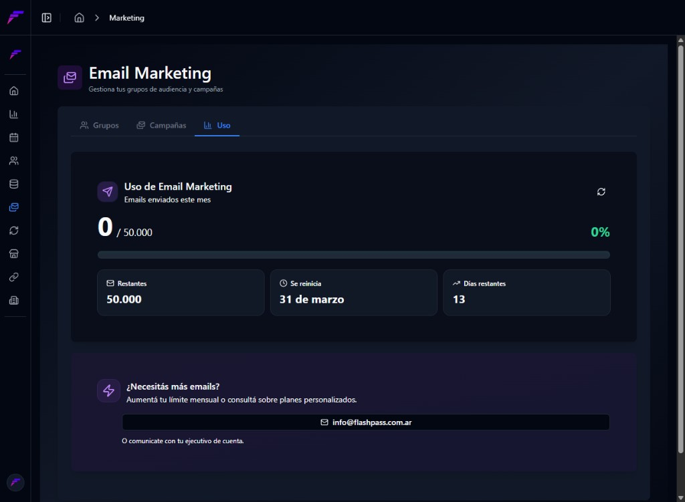
Establecimientos
Configurá tu venue una vez y reutilizalo en todos tus eventos. Cada establecimiento tiene múltiples funcionalidades: desde la información básica hasta el inventario, las mesas, las cajas y la integración con MercadoPago.
Navegá entre las pestañas del establecimiento para acceder a cada sección. Todas las configuraciones se aplican al venue seleccionado.
Información
Datos básicos del establecimiento: nombre, dirección, capacidad y estado (Activo/Inactivo). Configurá la información pública que verán tus clientes.
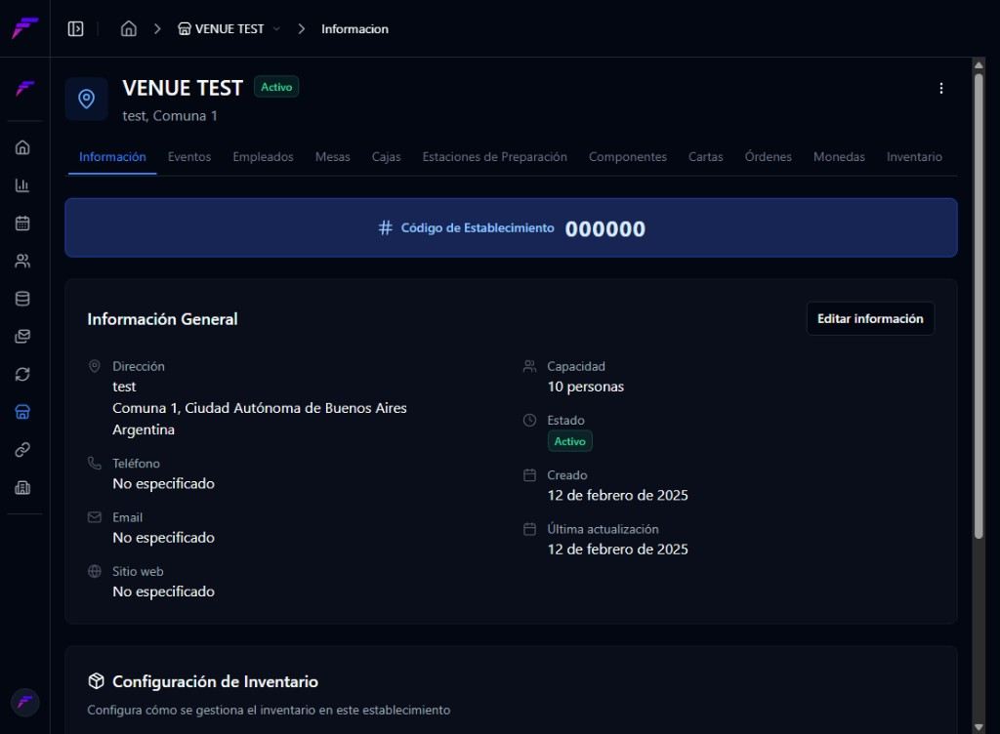
Eventos
Gestioná los eventos asociados al establecimiento. Solo se muestran los eventos que tienen lugar en este venue. Hacé clic en un evento para acceder a sus tres secciones operativas:
- Mapa de Mesas: Vista operativa del evento con clientes y reservas por menú
- Saldos: Balance de consumos por cliente y mesa
- Cajas: Cajas registradoras activas durante el evento
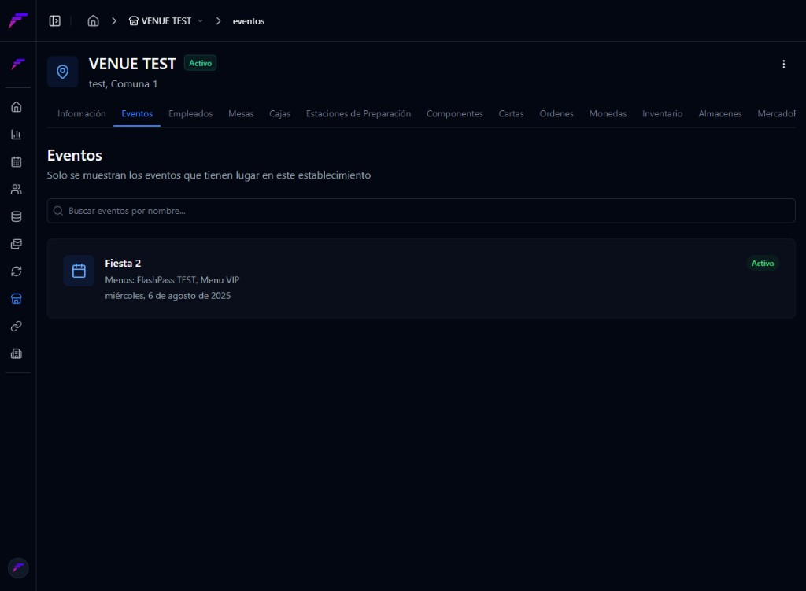
Al entrar a un evento
Al hacer clic en un evento (ej: "Fiesta 2"), accedés al menú lateral con las tres opciones. Para Mapa de Mesas, primero tenés que seleccionar un menú: cada menú del evento tiene su propio mapa con los clientes y reservas asociados. Podés copiar la URL, ver la carta o ver el mapa de cada menú.
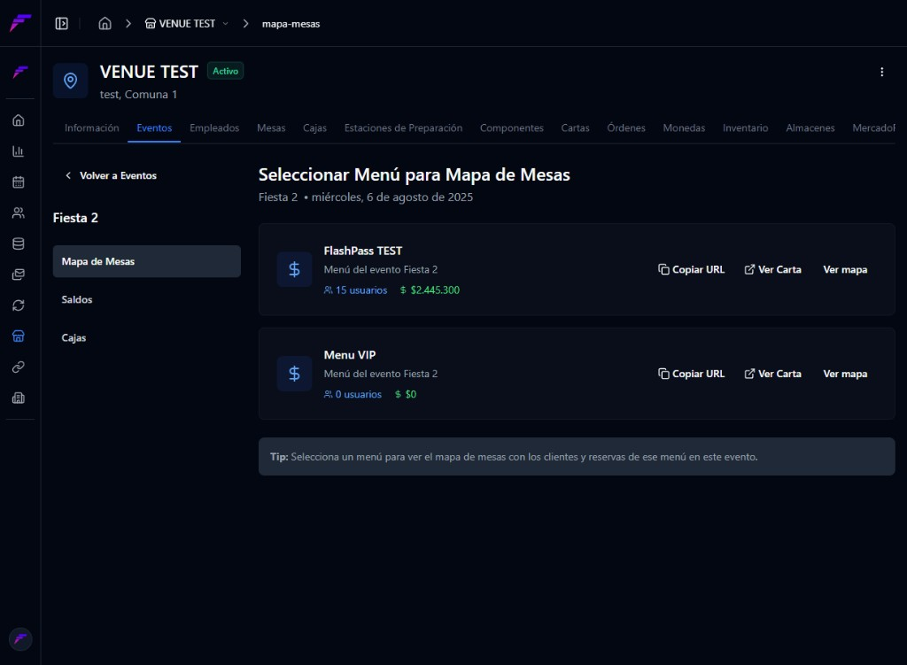
Eventos → Mapa de Mesas
Vista operativa del plano de mesas durante el evento. Accedé desde Eventos → [evento] → Mapa de Mesas.
Primero seleccioná un menú del evento — cada menú tiene su propio mapa con los clientes y reservas asociados. Verás mesas ocupadas, disponibles y con deuda en tiempo real. Podés exportar ingresos y usar el zoom para navegar el plano.
Eventos → Cajas
Gestioná las cajas registradoras activas durante el evento. Accedé desde Eventos → [evento] → Cajas.
Verás el estado de cada caja: Carga Manual, Sin sesión, etc. La tabla muestra efectivo inicial, efectivo actual, electrónico, sector y filtros (Con movimiento, Solo efectivo, Pendiente retiro). Las cajas se configuran a nivel establecimiento (ver Cajas) y se operan desde acá durante el evento.
Eventos → Saldos
Los saldos permiten gestionar el dinero cargado por los asistentes durante el evento. Accedé desde Establecimientos → Eventos → [evento] → Saldos.
Paso 1 — Seleccionar menú
Primero tenés que elegir un menú del evento. Cada menú tiene sus propios saldos y transacciones. La pantalla muestra los menús disponibles con la cantidad de usuarios y el balance total de cada uno. Hacé clic en Ver saldos para acceder al detalle.
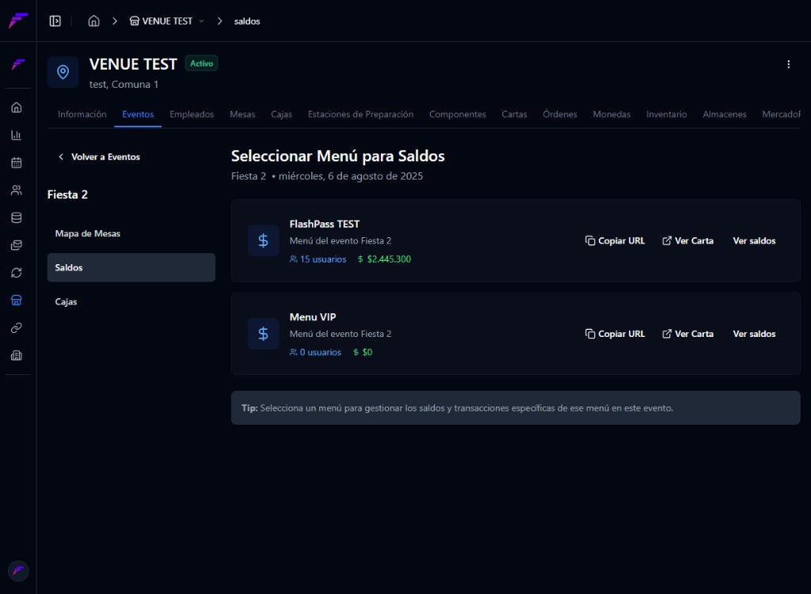
Paso 2 — Gestionar saldos
Una vez dentro del menú, verás:
- Total Saldos: Monto total cargado por los clientes
- Total Pendiente: Monto pendiente de cobro
- Total Usuarios: Cantidad de usuarios con saldo en ese menú
Acciones: Descargar Excel, Importar transacciones o + Cargar saldos para agregar créditos manualmente a los usuarios.
Filtros: Todos, Pagados, No pagados, Con deuda, Con mesa, Sin mesa. Buscá por email, número de mesa o nombre.
La tabla muestra por cada usuario: email, mesa asignada, saldo actual, pendiente, límite y estado (Pagado, etc.).
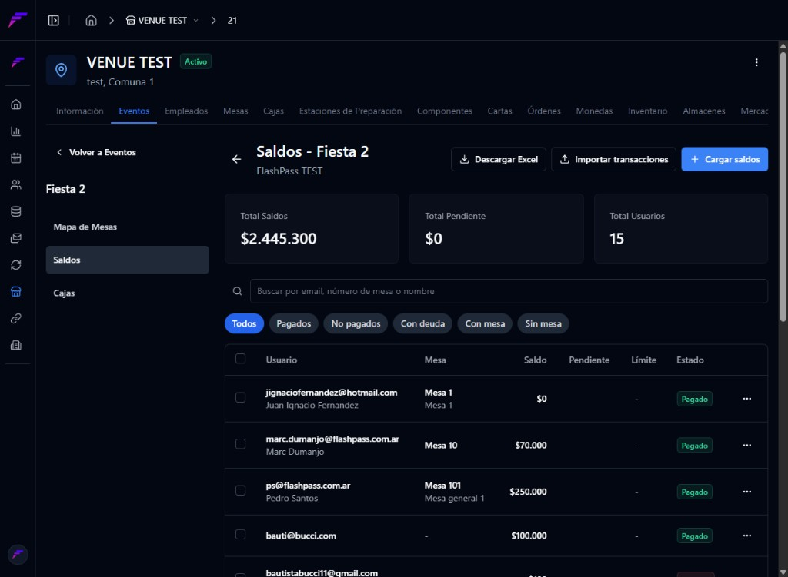
Empleados
Gestioná los empleados y colaboradores de tu establecimiento. Cada empleado tiene un código de acceso POS de 6 dígitos para operar en las cajas.
- Roles: Camarero, Cajero, Encargado de Inventario
- Código de Acceso POS: Código numérico para ingresar al punto de venta
- Filtrá por evento y rol, exportá y archivá empleados inactivos
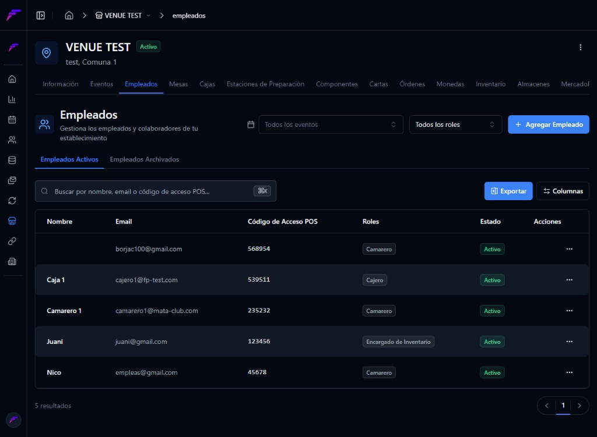
Mesas (configuración del establecimiento)
Organizá el layout de mesas del venue con un editor visual. Esta configuración es a nivel establecimiento — definís el plano del piso que luego se usa en los eventos. Creá el mapa arrastrando formas (círculos, cuadrados, triángulos), agregá barreras, etiquetas y categorías (GENERAL, VIP, etc.).
- Formas: círculo, cuadrado, triángulo
- Tarifas por categoría de mesa
- Mesas archivadas recuperables
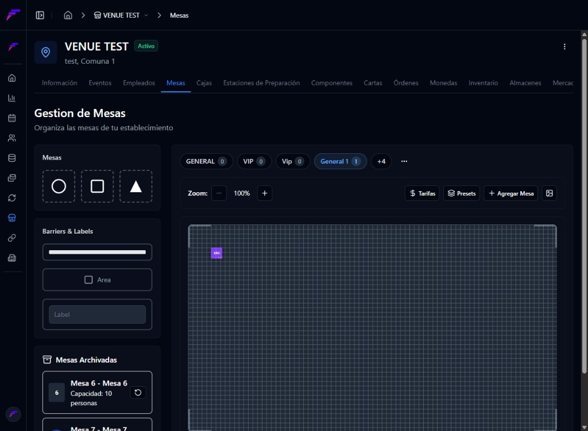
Cajas (configuración del establecimiento)
Configurá las cajas registradoras disponibles en el establecimiento. Hay dos tipos:
- Caja de Boletería: Permite vender entradas y combos
- Caja de Barra: Solo permite vender productos del menú
Cada caja tiene nombre, número POS, tipo y sector asignado.
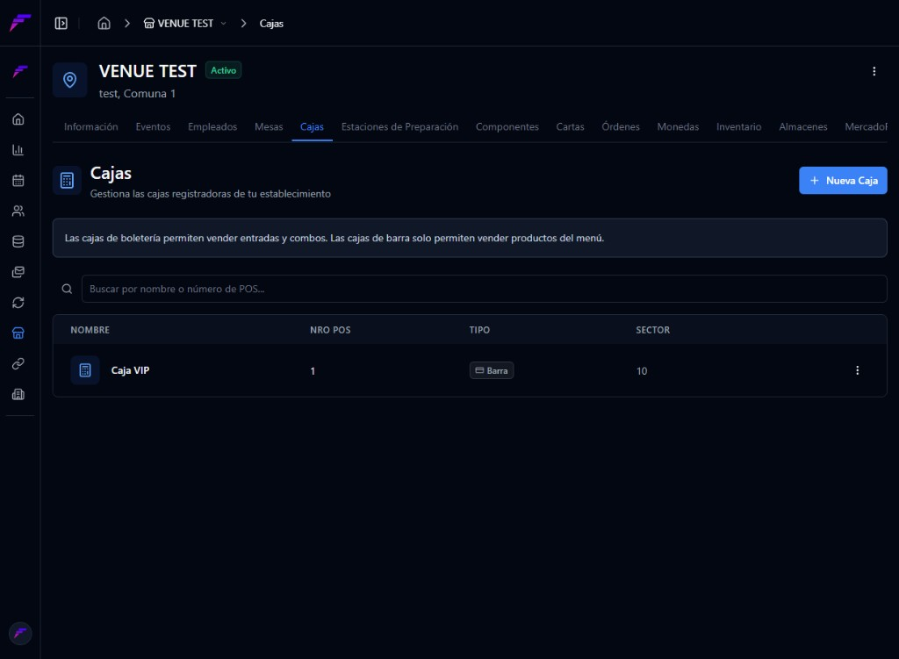
Estaciones de Preparación
Configurá las estaciones donde se preparan los productos (ej: Bar Principal). Cada estación tiene un código, bartenders asignados y categorías de productos.
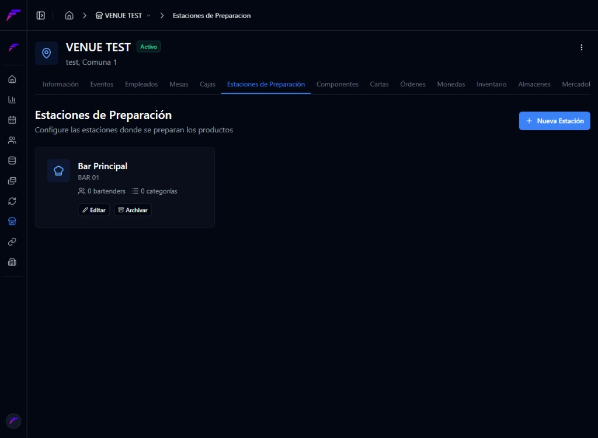
Componentes
Gestioná los componentes (insumos) del establecimiento: nombre, descripción, cantidad/unidad, precio unitario e ID externo. Importá o exportá por Excel.
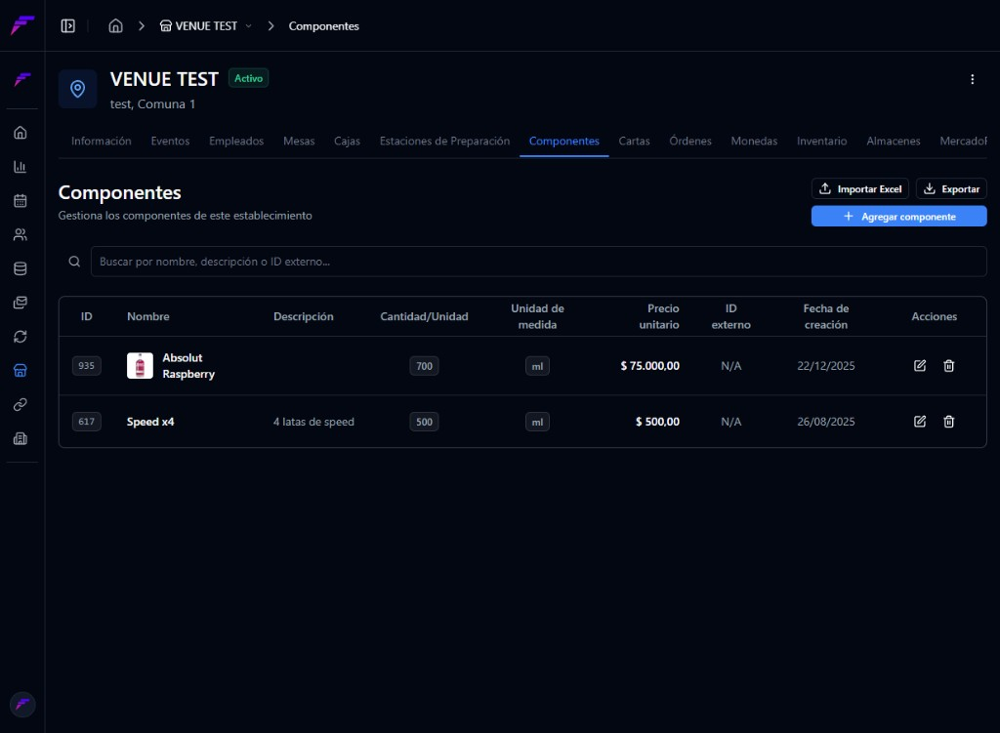
Cartas y Menús
Gestioná los menús, productos y métodos de pago del establecimiento. Creá cartas, asigná productos y compartí el link o QR con los clientes.
- Gestionar: Editar productos y categorías
- Ver como cliente: Vista previa del menú
- Copiar URL / Descargar: Compartir o imprimir
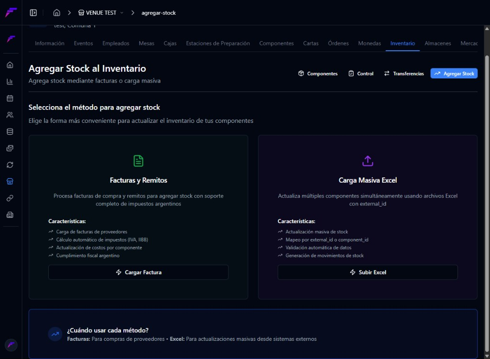
Órdenes
Gestioná las órdenes de tu establecimiento. Filtrá por evento, carta, mesa, caja o estado. Cada orden muestra ID, fecha, cliente, evento, carta, mesa, total y estado (En Proceso, Completada, etc.).
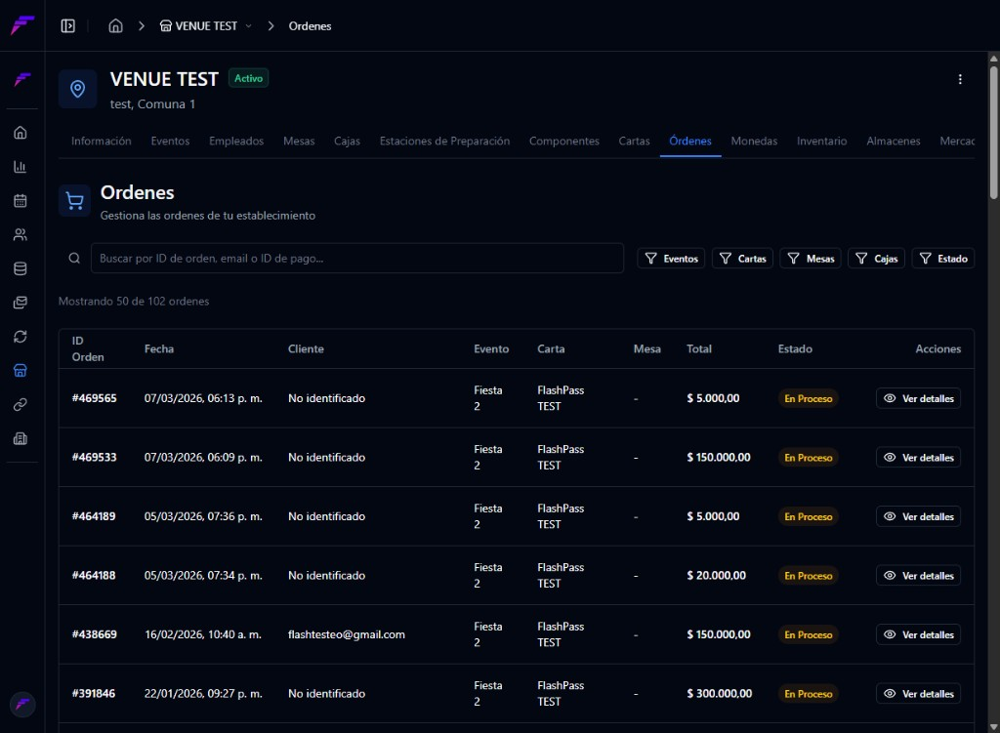
Monedas
Gestioná las monedas y tipos de cambio para el establecimiento. La moneda base es siempre ARS (Peso Argentino). Todas las demás monedas se configuran con su tipo de cambio respecto al peso.
Lista de monedas
En la sección Monedas verás la tabla de monedas configuradas. Cada fila muestra: moneda, código, tipo de cambio y estado (Moneda Base, Activa). El menú de acciones (⋯) permite editar o gestionar cada moneda.
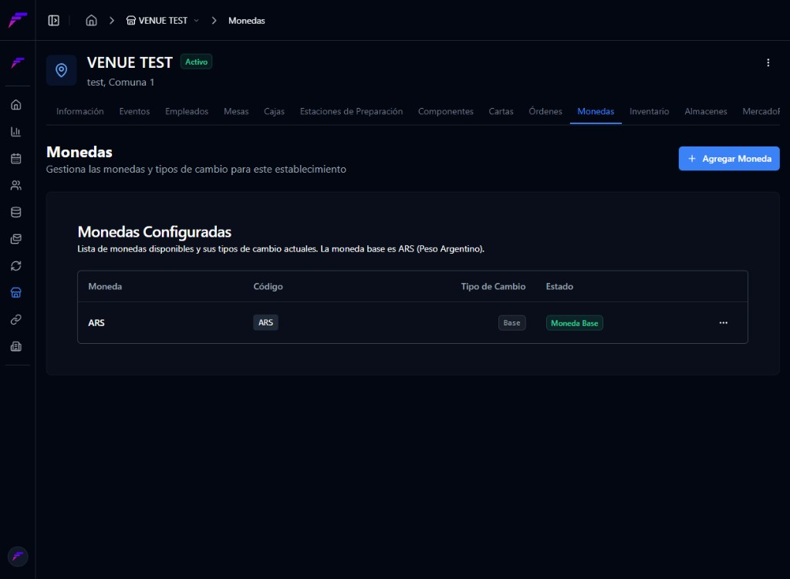
Agregar una moneda
Hacé clic en + Agregar Moneda. En el modal:
- Moneda: Seleccioná la moneda del listado (ej: USD - Dólar Estadounidense)
- Tipo de Cambio (1 USD = ? ARS): Ingresá cuántos pesos argentinos equivale a 1 unidad de la moneda seleccionada. Por ejemplo, si 1 USD = 1420 ARS, ingresá 1420.
Hacé clic en Agregar Moneda para guardar. La nueva moneda aparecerá en la lista con estado "Activa" y su tipo de cambio.
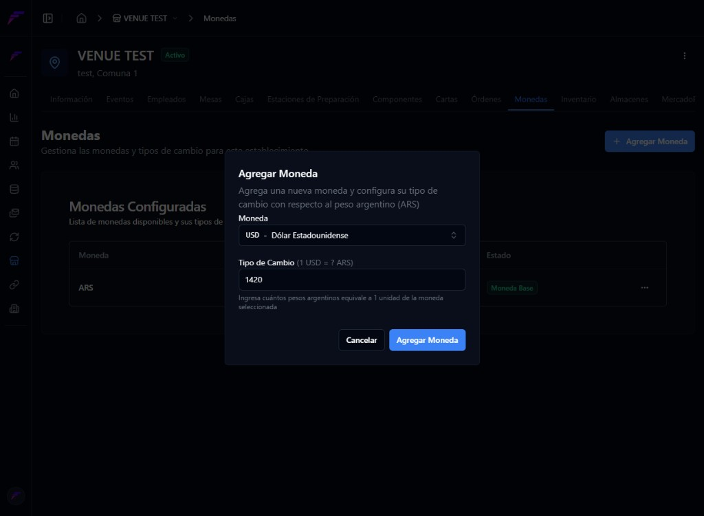
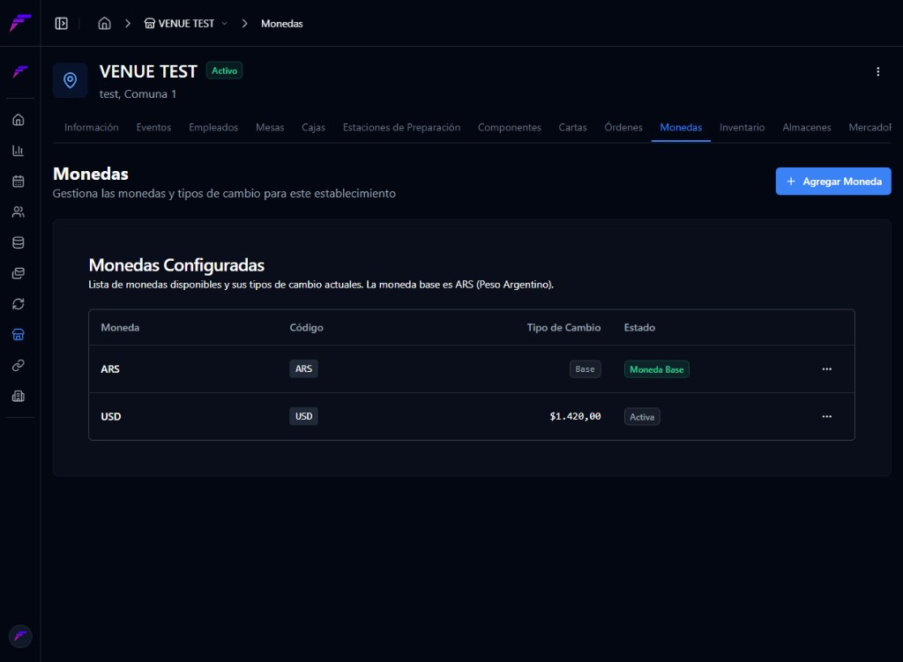
Inventario
Gestioná el stock y umbrales de tus componentes. El inventario tiene cuatro subsecciones:
- Componentes: Stock actual por almacén, umbrales y nivel (Crítico, Stock Bajo, OK)
- Control: Sesiones de conteo de inventario. Creá nuevas sesiones y revisá el historial
- Transferencias: Movimientos de stock entre almacenes
- Agregar Stock: Por facturas/remitos (con impuestos argentinos) o carga masiva Excel
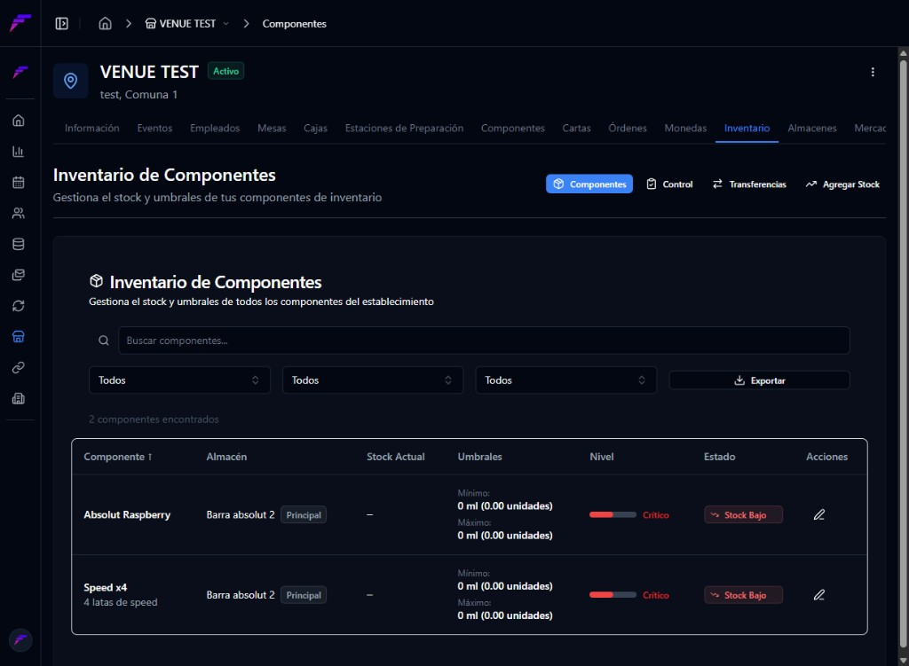
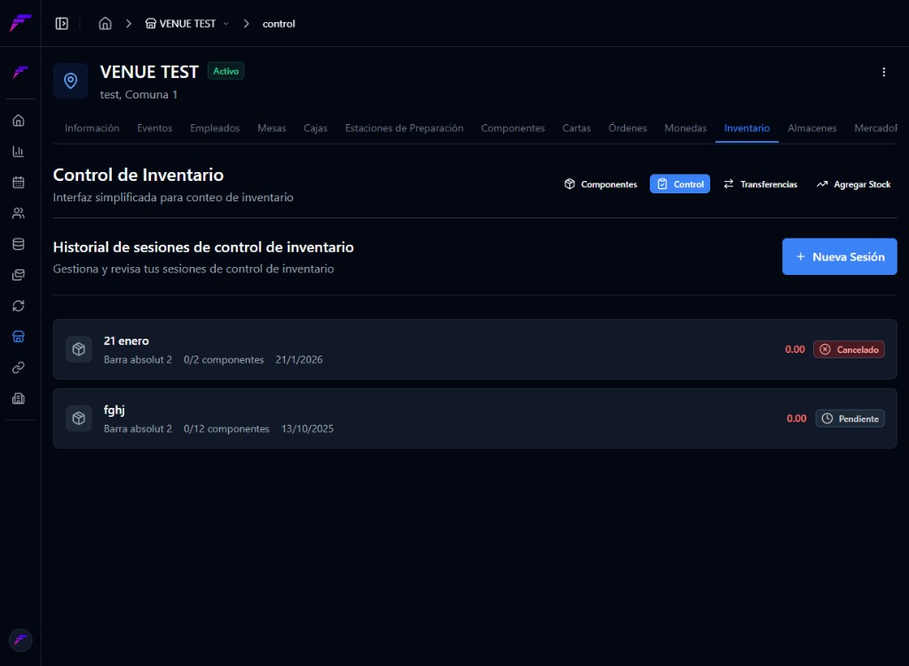
Almacenes
Gestioná los almacenes del establecimiento para organizar el inventario. Creá almacenes (ej: Barra principal, Depósito de bebidas), marcá uno como principal y organizá el stock por ubicación.
Al crear un almacén: nombre, descripción opcional (máx. 500 caracteres) y opción "Almacén principal".
MercadoPago
Configurá tu cuenta de MercadoPago para procesar pagos en el establecimiento. Una vez conectada, podés crear la Tienda de MercadoPago y los Puntos de Venta (QR) para cobros.
- Cuenta Conectada: ID de usuario, estado (En producción)
- Tienda: Crear tienda o con ubicación manual
- Puntos de Venta (QR): Para pagos con QR
FlashPOS
Sistema de punto de venta para consumiciones y productos dentro del evento.
- Venta de consumiciones por sector
- Cajas múltiples configurables
- Menús con categorías y precios
- Descuento automático de inventario
FlashPay
Billetera digital con créditos para eliminar filas en la barra. Tus clientes cargan créditos y consumen sin efectivo.
- Créditos antes o durante el evento
- Consumo desde la app sin efectivo ni tarjeta
- Integración nativa con FlashPOS
Cobros
FlashPass no retiene tu plata. Cada venta va directo a tu cuenta de MercadoPago, y el fee se descuenta automáticamente.
- Fee por entrada vendida
- Cortesías sin costo
- Acreditación en 1-3 días hábiles
- CBU para pagos semanales automáticos
Gestionar devoluciones
Gestioná las solicitudes de reembolso de tus clientes desde un solo lugar. Consultá el estado, el motivo y el marco legal de cada solicitud.
Lista de devoluciones
En la sección Devoluciones verás todas las solicitudes de reembolso. Podés buscar por ID de compra o nombre del cliente, y filtrar por estado del reembolso (Todos, Pendiente, Reembolsado, etc.).
La tabla muestra:
- ID de Compra: Identificador único de la transacción
- Nombre: Cliente que solicitó el reembolso
- Evento: Evento al que corresponde la compra
- Fecha del Evento: Fecha del evento (con indicador si ya pasó)
- Valor total: Monto de la transacción
- Ley del Consumidor: Días desde la compra y marco legal (Ley 24.240)
- Motivo: Botón para ver el motivo detallado
- Acciones: Estado actual (Reembolsado, Pendiente, etc.)
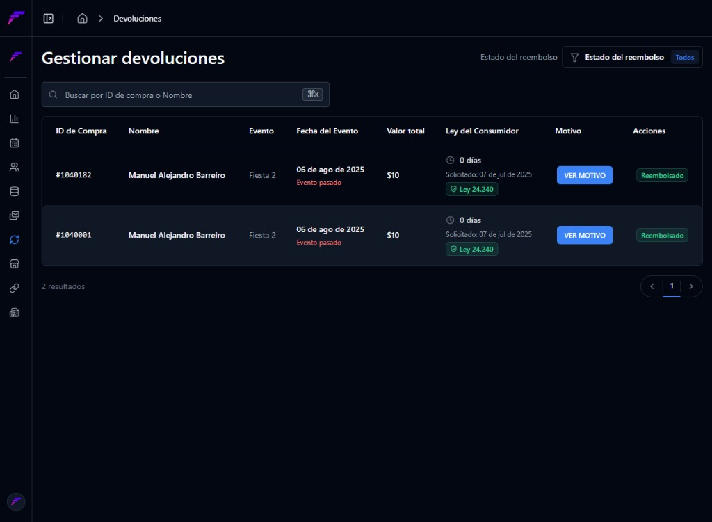
Ver motivo de devolución
Al hacer clic en VER MOTIVO se abre un modal con los detalles completos de la solicitud:
- ID de Compra y Evento: Datos de la transacción
- Días desde la compra: Determina si aplica la Ley de Defensa del Consumidor (Art. 34)
- Ley 24.240: El consumidor tiene derecho a revocar la aceptación dentro de los 10 días consecutivos desde la compra. Este derecho no puede ser renunciado.
- Motivo detallado del cliente: La razón que indicó el cliente (ej: "No puedo asistir"). Durante los primeros 10 días no se requiere expresión de causa por ley.
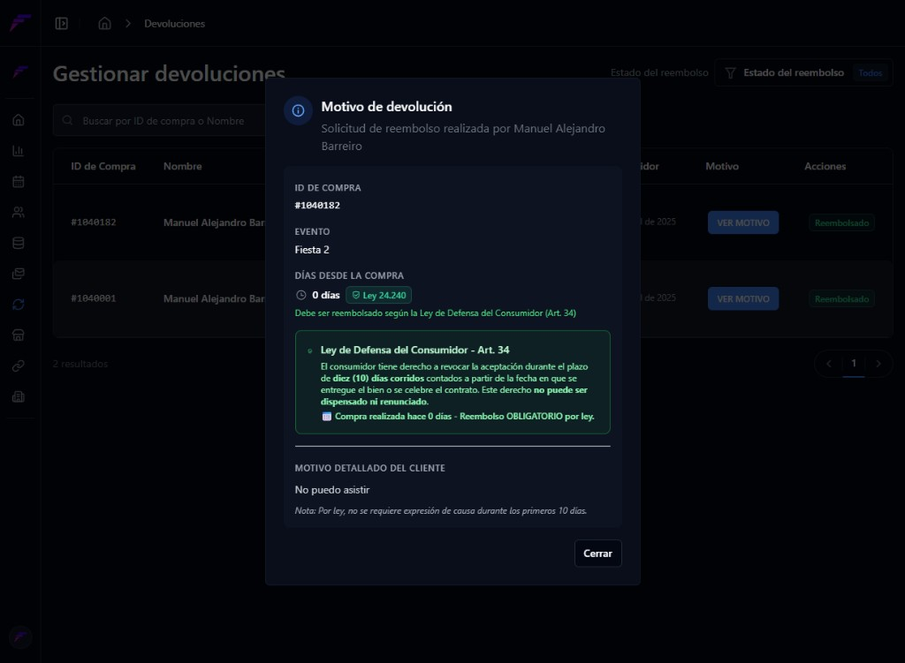
Preguntas frecuentes
¿Listo para empezar?
Ir al Studio →